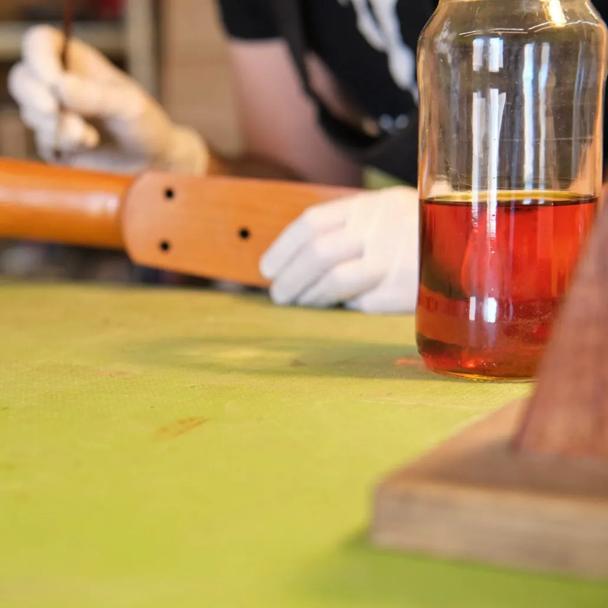
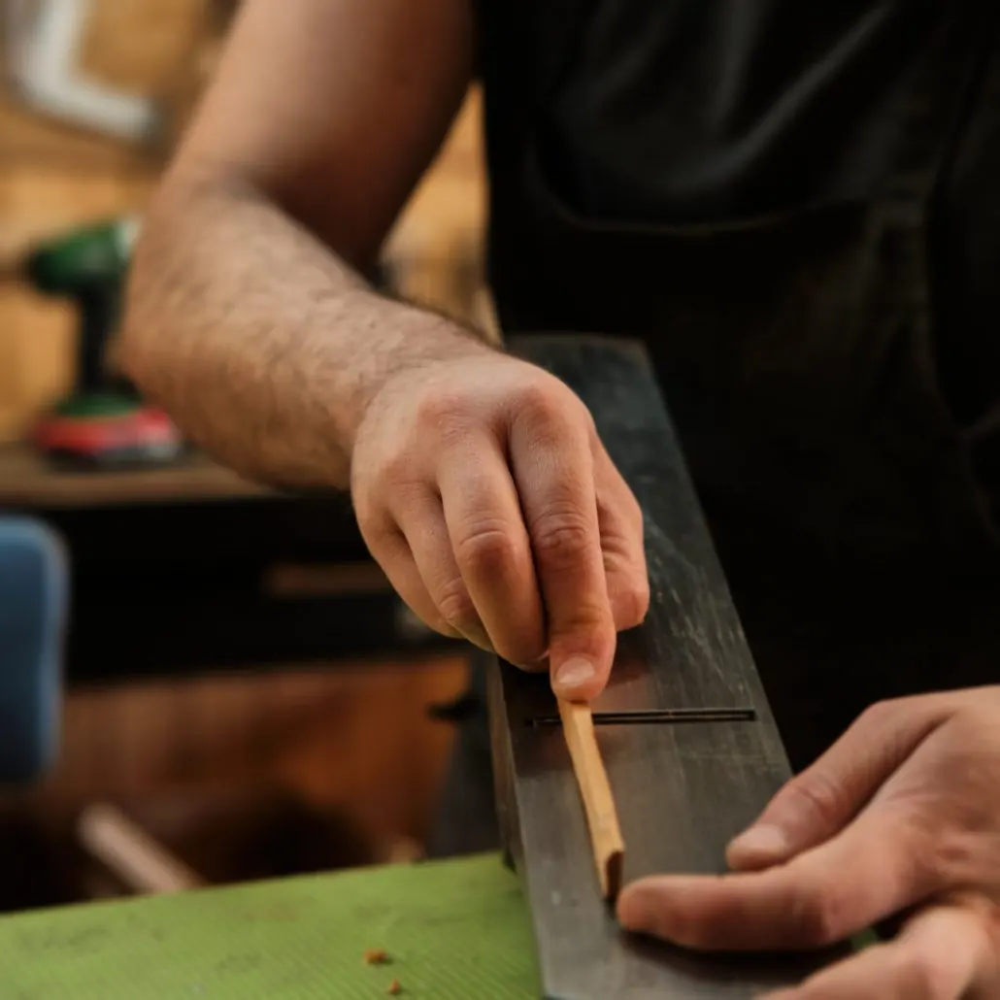

El término luthier de guitarras evoca imágenes de dedicación, precisión y una conexión especial con la música. Los luthiers son los artesanos encargados de construir, reparar y personalizar guitarras, combinando habilidades tradicionales con conocimientos modernos para crear verdaderas obras de arte sonoro. Pero, ¿qué implica realmente esta profesión? En este artículo, exploraremos qué hace un luthier, su historia, y lo que se necesita para dominar este oficio.
¿Qué es un luthier de guitarras?
Un luthier de guitarras es un especialista en la construcción, reparación y personalización de guitarras. A diferencia de la producción en masa de instrumentos, el trabajo del luthier es profundamente artesanal. Cada guitarra que construye es única, diseñada y creada a mano con atención al más mínimo detalle, desde la selección de las maderas hasta la aplicación de losbarnices.
El luthier no solo fabrica guitarras, sino que también asesora a los músicos para crear un instrumento que se adapte a sus necesidades específicas, logrando un equilibrio entre la estética, la funcionalidad y el sonido deseado. Además, estos artesanos son responsables de reparar guitarras dañadas, prolongando su vida útil y manteniendo intactas sus cualidades sonoras.
¿Qué hace un luthier de guitarras?
El trabajo de un luthier abarca varias áreas, entre ellas:
- Diseño y construcción: Seleccionar maderas de calidad, realizar cortes precisos, ensamblar las piezas y aplicar barnices. Este proceso requiere paciencia y precisión para garantizar un resultado impecable.
- Reparación y mantenimiento: Ajustes en el mástil, restauraciones de instrumentos antiguos, reemplazo de trastes o cuerdas y mantenimiento general para conservar el sonido original de la guitarra.
- Personalización: Los luthiers ofrecen opciones únicas, como incrustaciones decorativas, acabados personalizados y ajustes específicos según el estilo de cada músico. También pueden modificar guitarras existentes para adaptarlas a necesidades concretas.
- Asesoramiento técnico: Orientan a los músicos sobre cómo cuidar su instrumento y elegir características que se ajusten a sus preferencias sonoras y estéticas.

Historia del luthier
El término «luthier» proviene del francés luth (laúd), y en sus inicios, se refería a los constructores de laúdes en la Europa medieval. La profesión evolucionó a medida que nuevos instrumentos de cuerda ganaron popularidad, como los violines, violas y guitarras.
En el siglo XVI, España se convirtió en el epicentro de la evolución de la guitarra. Luthiers como Antonio de Torres revolucionaron su diseño, estableciendo los principios básicos que se mantienen hoy. Sus innovaciones en el tamaño, forma y materiales de las guitarras clásicas sentaron las bases de los estándares actuales.
Hoy en día, la figura del luthier combina la tradición artesanal con herramientas modernas. Aunque se emplean tecnologías avanzadas como el diseño asistido por computadora, el proceso sigue siendo principalmente manual, reflejando la experiencia y el arte del creador en cada instrumento.
¿Cuánto tiempo se tarda en aprender a ser luthier de guitarras?
Dominar el oficio de luthier de guitarras puede llevar años. Aunque existen cursos que enseñan las bases en unos meses, lograr maestría requiere una combinación de aprendizaje teórico y práctico.
El proceso comienza con formación básica en talleres especializados, donde se adquieren conocimientos sobre maderas, acústica, diseño y construcción. Posteriormente, los aprendices trabajan junto a maestros luthiers, observando y replicando técnicas avanzadas.
Además, muchos luthiers dedican años a experimentar con materiales y métodos para perfeccionar su propio estilo. Este proceso continuo de aprendizaje y mejora es lo que define a los grandes artesanos.

Puedes conocer más sobre el tema en mi podcast La cabaña del luthier
¿Qué conocimientos se necesitan para ser luthier?
El oficio de luthier requiere una amplia variedad de habilidades y conocimientos, que incluyen:
- Conocimiento de maderas: Saber identificar y trabajar con maderas como abeto,cedro, palosanto o ébano es esencial, ya que cada una aporta características únicas al sonido de la guitarra.
- Acústica y vibración: Comprender cómo las propiedades de la madera y el diseño afectan la resonancia y el tono del instrumento.
- Habilidades manuales: Cortar, ensamblar, lijar y barnizar con precisión, garantizando un acabado impecable.
- Química de materiales: Para trabajar con colas, barnices y tratamientos de madera que aseguren la durabilidad y estética del instrumento.
- Diseño y creatividad: Desde planos hasta incrustaciones artísticas, el luthier debe tener un enfoque creativo para personalizar cada guitarra.
- Empatía y comunicación: Captar las necesidades del cliente y convertirlas en un instrumento único que supere sus expectativas.
El oficio de luthier no solo demanda conocimientos técnicos, sino también pasión por la música y el arte, dedicación y una búsqueda constante de la perfección. Esto hace que cada guitarra creada sea una obra maestra con alma propia.

Luthier artesanal en Los Alcázares (Murcia). Construye guitarras personalizadas e instrumentos de folclore en Vael de Ginés.